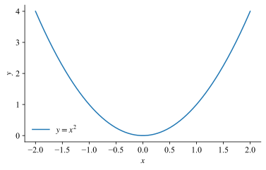

Math example
Here's some inline math: $y = x^2$. And some display math:
$$ \begin{equation} \frac{1}{2} = \frac{2}{4}. \end{equation} $$
Below is a parabola.

Some more: $\{1,2,3\}$.
Here's some inline math: $y = x^2$. And some display math:
$$ \begin{equation} \frac{1}{2} = \frac{2}{4}. \end{equation} $$
Below is a parabola.

Some more: $\{1,2,3\}$.